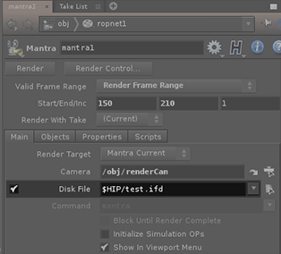

Please follow these steps:
. 
The generation job can be handled by RR.
Just apply the settings as shown above and submit the Houdini file.
The scene parser for Houdini will create to jobs.
Just like every other archive renderer type, you have to load one file of your .ass sequence into the rrSubmitter.
The rrSubmitter recognizes the frame range of your sequence and output name.
You can also start the rrSubmitter with the file as commandline parameter.
All Archive/Standalone renderer are based on a scene file per frame in Royal Render.
You can not export a complete animation into one file, you need one file per Frame.
name.#.ext
Mantra requires to run the hserver.
If the hserver is not started before the rrClient starts to render, then mantra starts the hserver. hserver continues to run after mantra finished. And as long as a child process (hserver) is running, the render script will not finish.
Workaround: Please start hserver with the system.
There is one issue with Mantra and RRender.
If you start the rrClient manually, then you can NOT render .ifd files.
You have to start the rrClientconsole or install the client as service.